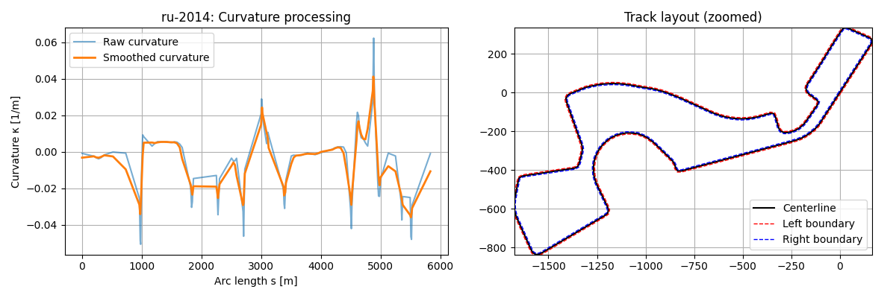
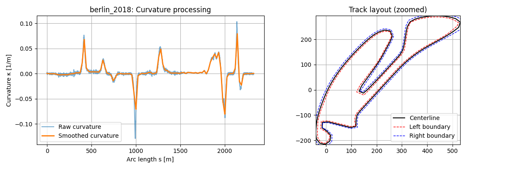
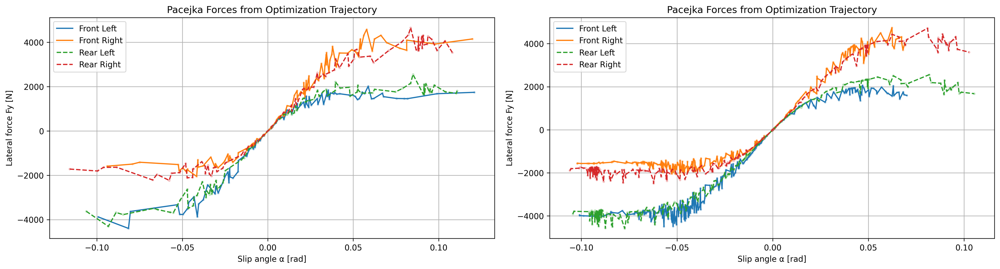
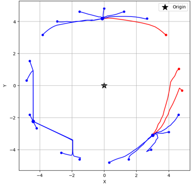
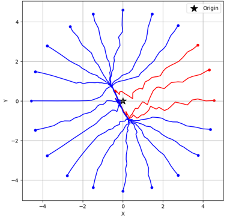
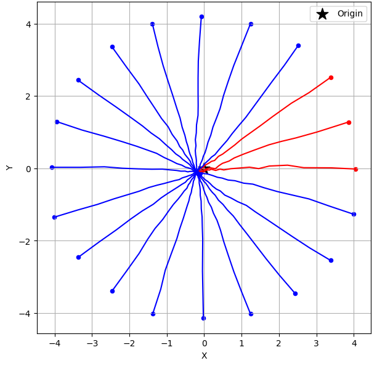
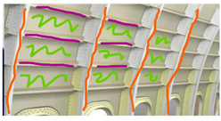
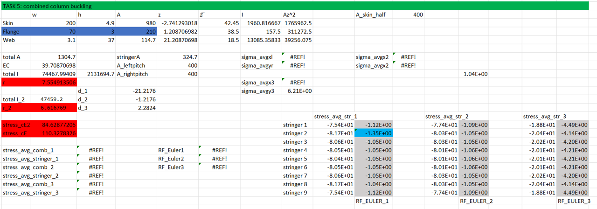

PRJ_012
Asclepios VI
Mission Control Software — Asclepios VI Analog Space Mission — EPFL
I work as a Software Officer in the EPFL ASclepios analog space mission, supporting mission control operations in real time. My main responsibility is running and maintaining the YAMCS instance used for telemetry, command handling, and overall mission monitoring. I also designed the communication panel for this year’s mission, building on and improving the systems used in previous editions. On the operations side, I help manage the mission shift plan to ensure smooth coverage across all roles throughout the mission. Overall, the role combines software engineering, systems thinking, and hands-on mission operations in a space-analogue environment.
PRJ_011
Minimum Lap Time Optimization for a Double-Track Vehicle Model
AE 6310 — Minimum Lap Time Optimization — Nonlinear Vehicle Dynamics
This project implements a nonlinear optimal control framework to compute minimum lap time trajectories for a race vehicle using a double-track vehicle model. The problem is formulated in spatial coordinates and transcribed into a large-scale nonlinear program using direct collocation. The vehicle model includes nonlinear tire dynamics (Pacejka), aerodynamic effects, load transfer, and friction circle constraints to ensure physical realism. The optimization is solved using IPOPT within the AMIGO framework, producing optimal racing lines, velocity profiles, and control inputs for two circuits (Berlin Formula E and Sochi Autodrom). Results show that the optimizer fully exploits available tire friction and power limits while revealing distinct trade-offs between aggressive short-track driving and smoother high-speed circuit behavior.



PRJ_010
Resilient Secure Communication for Multi-UAV Systems under Network Attacks
CS 6262 — Aerospace Security Research — UAV Swarms
This project simulates multi-UAV swarm coordination under network-layer attacks using the W-MSR consensus algorithm. A custom Python-based simulator models drones exchanging state information over a k-nearest-neighbor communication topology inspired by MAVLink-based systems. The study evaluates how network connectivity, adversarial agents, and filtering parameters influence swarm convergence, stability, and cohesion. Malicious nodes inject falsified position data to simulate realistic attacks such as spoofing and false data injection. Results highlight the trade-off between robustness and connectivity, showing that sparse networks are highly vulnerable to fragmentation while dense networks improve resilience but introduce new communication-related risks.



PRJ_009
Aerospace Systems Engineering
AE 6372 — Android Malware Detection — Unsupervised ML
This course provided a comprehensive foundation in systems engineering, covering integrated product and process development, project scoping, quality function deployment, requirements analysis, model-based systems engineering, trade studies, risk management, robust design, and product lifecycle management.
In a capstone group project, we applied these principles to design a mission to Mars supporting future human exploration. Using MagicDraw and Paramagic, our team modeled the mission architecture, performed system-level calculations, and conducted trade studies to optimize subsystem selection, instrument payloads, and mission profiles. The mission concept focused on characterizing the Martian atmosphere, surveying terrain, and investigating potential surface and subsurface resources, while ensuring feasibility within a $1 billion budget. This project emphasized integrating technical requirements, scientific goals, cost, risk, and schedule to create a robust, high-impact space exploration mission.
PRJ_008
Data Analytics and Security
INT 6450 — Android Malware Detection — Unsupervised ML
In this course, our team developed a pipeline to detect malicious behavior in Android apps by combining deterministic list-matching with unsupervised machine learning. We ingested nested JSON scan data, extracting metadata, permissions, file system anomalies, and network activity, and structured it in a Pandas DataFrame. Network endpoints were checked against static threat lists and enriched with VirusTotal, URLScan.io, and AlienVault OTX to flag known threats. We then engineered numerical features from app metadata and applied Isolation Forest, Local Outlier Factor, and One-Class SVM to identify unusual patterns, enabling detection of both known and emerging threats.
PRJ_007
Computer Science and Engineering Algorithms
CSE 6140 — Set Cover Problem — Algorithm Design
Worked with a team to tackle the Set Covering Problem using both exact and heuristic methods. We implemented Branch and Bound, Greedy Approximation, Simulated Annealing, and Hill Climbing algorithms in Python and compared how they performed on different datasets. The project gave us hands-on experience with algorithm design, optimization techniques, and evaluating performance across different hardware setups.
PRJ_006
Iterative Methods for Systems of Equations
MATH 6644 — Jacobi Methods — ILU Methods
In this course, I explored solving large, sparse linear systems, like those in Markov chain models. I implemented the solvers myself and tested different preconditioners, comparing Jacobi and ILU methods for speed and accuracy. I also optimized performance by switching from dense to sparse matrices, which let me handle really large systems (up to 100,000 equations) without running into memory issues.
PRJ_005
Air Breathing Propulsion System Design
AE 6361 — NPSS — FLOPS
In this course, I got to dive deep into how aerospace engines work, from thermodynamic cycles to full propulsion system design. I worked on three main projects: first, I coded a gas turbine simulation in Python using thermodynamic equations; then, I built the same turbine model in NASA’s NPSS software; and finally, I integrated NPSS with FLOPS to design an aircraft optimized for maximum range.
PRJ_004
Satellite Mission Planning and Earth Monitoring
Student Project
In this group project, we developed a system to detect and count cars in Munich parking lots to support the city’s goal of improving parking accessibility for residents and visitors. We researched current parking usage, identified high-demand areas, and provided data to inform decisions on where new parking infrastructure should be added. Our approach integrated satellite imaging, sensor data, and image analysis to estimate occupancy in existing lots. This work aimed to reduce congestion, improve traffic flow, and make parking in Munich a more seamless experience.
PRJ_003
HyperWorks and HyperMesh
FEM Project
In my Aerospace Structures and Elements course, I learned how to use HyperWorks, including HyperMesh, a simulation and pre-processing suite for analyzing structural and thermal behavior, to evaluate aerospace components. For our main project, I modeled a wing, ran stress analyses, and verified that the structural loads stayed within safe limits, ensuring the design met safety and performance requirements.


PRJ_002
SolidWorks
CAD Project
In my CAD course, I worked extensively with SolidWorks to create detailed 3D models and technical drawings. I completed several assignments designing mechanical parts from scratch, making sure each model met precise dimensions and tolerances for manufacturing. The course focused on applying design intent, engineering standards, and manufacturing constraints, which helped me build practical skills in producing accurate, production-ready technical documentation.
PRJ_001
TUM Tech Challenge 2021
TUM Tech Challenge — Figma — 2021
In a group project, we developed Ecolime, an app designed to provide EV drivers with affordable, climate-neutral charging options while reducing energy waste. Using Figma, we created the app's interface and user experience, incorporating gamification features such as avatars, coins, and rankings to incentivize green charging behavior.
The platform connects EV drivers with renewable energy from private homeowners and businesses, allowing users to charge with 100% green energy or offset CO2 emissions via environmental organizations. Our team conducted market analysis, competitor research, and designed a flexible infrastructure that integrates both prosumer and public charging stations.